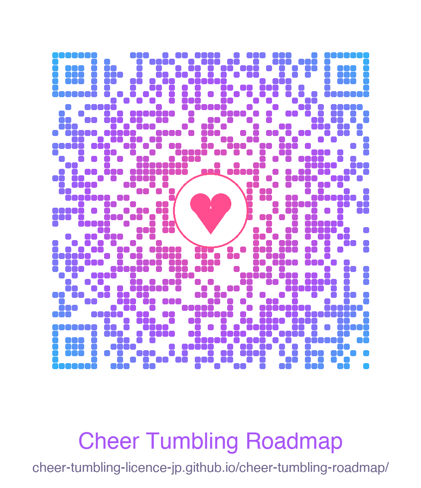

平素より、当教室の活動にご理解とご支援を賜り、誠にありがとうございます。
この度、一般社団法人チアタンブリング協会（CTA）より、 タンブリング技を体系的に・安全に習得できる練習ロードマップアプリ が公開されましたので、ご案内いたします。
このアプリでは、前転・後転といった基礎からバク転・宙返りといった上級技まで、 すべての技を「習得すべき順序」で動画付きで解説しており、 ご家庭での復習や、技に対する正しいイメージづくりにお役立ていただけます。
平素より、当教室の活動にご理解とご支援を賜り、誠にありがとうございます。
この度、一般社団法人チアタンブリング協会（CTA）より、 タンブリング技を体系的に・安全に習得できる練習ロードマップアプリ が公開されましたので、ご案内いたします。
このアプリでは、前転・後転といった基礎からバク転・宙返りといった上級技まで、 すべての技を「習得すべき順序」で動画付きで解説しており、 ご家庭での復習や、技に対する正しいイメージづくりにお役立ていただけます。
アプリは 30 日間すべての機能を無料でお試しいただけます。 クレジットカード登録も不要で、お子様のスマートフォンやタブレットからすぐにご利用開始いただけます。

ご利用に関するご質問やご不明な点がございましたら、 お気軽に当教室の指導者までお声がけください。 お子様の更なる成長のため、ご家庭と教室が連携してサポートしてまいります。
今後とも、よろしくお願い申し上げます。